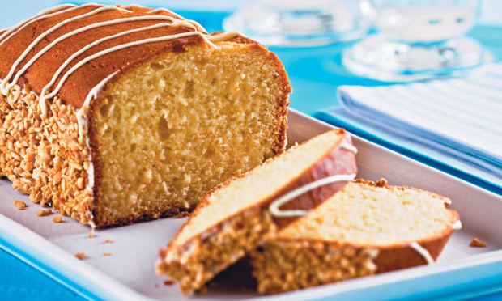

Receitas

Bolo Amanteigado com Chocolate Branco
Ingredientes
150 gramas de chocolate branco derretido picado; 1/4 xícara (chá) de açúcar; 100 gramasde manteiga amolecida; 2 ovos batido; 1 1/4 xícara (chá) de farinha de trigo; 1 colher(sobremesa) de fermento químico;Modo de Preparo
Unte e forre com papel manteiga a base e as laterais de uma forma retangular de 20cm X10cm. Reserve. Derreta o chocolate em banho-maria e reserve. Em uma tigela, misture oaçúcar e a manteiga até obter uma massa cremosa. Adicione os ovos e a farinha de trigopeneirada aos poucos. Junte o chocolate derretido e o fermento, misturando delicadamente.Coloque a massa na forma reservada e asse no forno, preaquecido a 180ºC, por 35 minutosou até que a massa esteja firme. Deixe amornar e desenforme.